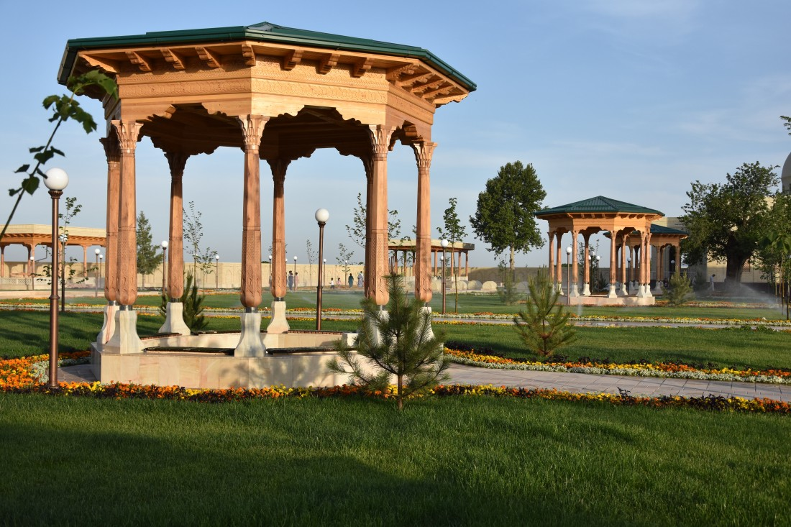
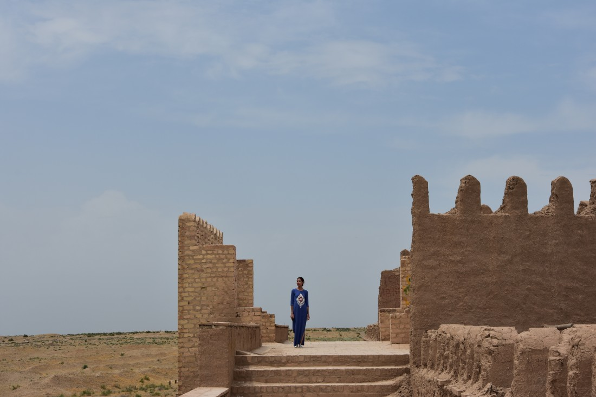

Термез – Религиозный центр
Центр древних цивилизаций и религий
Фотогалерея
Места, люди, события - все самое интересное вы найдете в нашей фотогалерее!
Климат
Летом в Термезе стоит исключительная жара, зимой же климат довольно мягкий для такой широты, но иногда возможны довольно сильные похолодания и снегопады, но это обычно ненадолго
Подарки и сувениры
В Термезе, также как и в большинстве городов Узбекистана, можно найти разнообразных мастеров по всевозможным видам прикладного искусства. Чаще всего туристы приобретают такие вещи как шкатулки, картины, статуэтки, музыкальные инструменты, сумки, платки и украшения. Для любителей национальной одежды тут можно найти мастеров, которые продают прекрасные чапаны ручной работы которые согреют Вас даже в очень холодную зиму! Для девушке-модниц предусмотрены современные наряды с использованием адраса и хан-атласа.
Кухня
В Узбекистане главным блюдом всех городов традиционно является плов. Вы знали, что сурхандарьинскому району принадлежит рекорд по приготовлению самого большого плова в мире? Повара из Денауского района сделали плов весом почти 9 тонн! Но не только пловом красен этот край. На территории Термеза вы найдете множество кафе и ресторанов, которые готовы познакомить Вас с блюдами традиционной кухни Сурхандарьи. В список входят шурпа, казан кабоб и то, что местные называют куй гушт. Это баранина, которая тушится на протяжении долгого времени до такого состояния, что просто тает во рту. Мясо с абсолютной легкостью отходит от косточки, а жир, называемы думба, на столько вкусный и не похожий на обычный жир, что даже человек, который не любит такие блюда не сможет отказаться от него. Еще больше про Узбекскую Кухню Вы сможете прочитать по этой ссылке.
История
Самый южный город и административный центр Сурхандарьинской области – это Термез. В этом городе и в его области до сих пор сохранилось множество исторических достопримечательностей, связанных с различными религиями, такими как зороастризм, несторианство, буддизм и ислам.
По данным археологов, город был создан еще в 1 тысячелетии до нашей эры, что делает его одним из самых древних городов во всем мире. Название «Термез» произошло от слова «Тарамастаха», что переводится, как «место на противоположном берегу» и получил он свое окончательное название лишь в 10 веке. До этого город сменил множество названий, таких как Демитриас, Антиохия, Тамо, Тами итд. Считается, что буддизм пришел на территорию Термеза еще во времена греко-бактрийского царства. Это подтверждают множество находок археологов, относящихся к той эпохе. До сих пор в городе и его окрестностях можно найти буддийские постройки, а в музеях множество предметов, относящихся к этой древней религии. За тысячелетия существование городом владели множество династий, среди которых были Ахемениды, Александр Македонский, Кушанское царство и множество других. Во времена Амира Тимура и его потомков, Термез занимал особое место в посольских отношениях с Китаем.
Именно тогда Самарканд стал столицей его могучей империи. Существует легенда о том, как Тимур выбирал свою столицу… Для того, чтобы определиться с выбором, он приказал своим подданным проехать по всем городам и повесить на их воротах тушу барана и через месяц лично сделал обход. На всех воротах туши успели сгнить, и только на вратах Самарканда она была почти полностью целой и даже стала подвяленной. Увидев это Тимур сказал: «В этом городе самый чистый воздух и здоровая земля. Столица будет здесь!». Благодаря внуку Тамерлана, Мирзо Улугбеку, город стал центром мировой науки. Самарканд вошел в список «50 городов, которые стоит посетить в этой жизни».